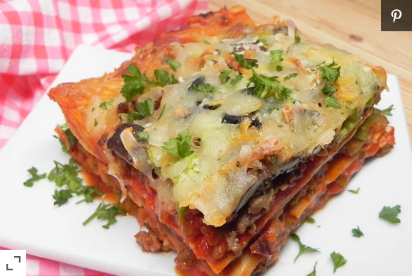

Lasagna

Ingredient
- 1(8 ounce) package lasagna noodles
- 6 Cajun-style sausage links, casings remove
- 2 (24 ounce) jars marinara sauce
- 1 (7 ounce) package sliced pepperoni
- 1 (8 ounce) package sliced fresh mushrooms
- 1 onion, sliced
- 1 large green bell pepper, chopped
- 2 (2.25 ounce) cans sliced black olives
- 2 (8 ounce) packages shredded pizza cheese blend
Instructions Checklist
- Preheat oven to 350 degrees F (175 degrees C).
- Bring a large pot of lightly salted water to a boil. Cook lasagna noodles in the boiling water, stirring occasionally until tender yet firm to the bite,
about 8 minutes. Drain.
- Heat a large skillet over medium-high heat. Cook sausage in the hot skillet, breaking into bite-size pieces, until browned, 5 to 7 minutes.
- Brush a layer of sauce over the bottom of a 9x13-inch baking pan. Arrange lasagna noodles side by side over the sauce. Ladle more sauce on top.
Place pepperoni on the noodles. Sprinkle sausage over pepperoni. Layer mushrooms, onion, green bell pepper, black olives, and cheese blend on top.
Continue layering until all ingredients have been used.
- Bake in the preheated oven until heated through and bubbling, about 35 minutes.
Marie's Easy Slow Cooker Pot Roast

Ingredients
- 4 pounds chuck roast
- salt and pepper to taste
- 1 packet dry onion soup mix
- 1 cup water
- 3 carrots, chopped
Directions
- Season the roast with salt and pepper to taste. Brown on all sides in a large skillet over high heat, about 4 minutes per side.
- Place the roast in the slow cooker and add the soup mix, water, carrots, onion, potatoes, and celery.
- Cover and cook on Low setting for 8 to 10 hours.